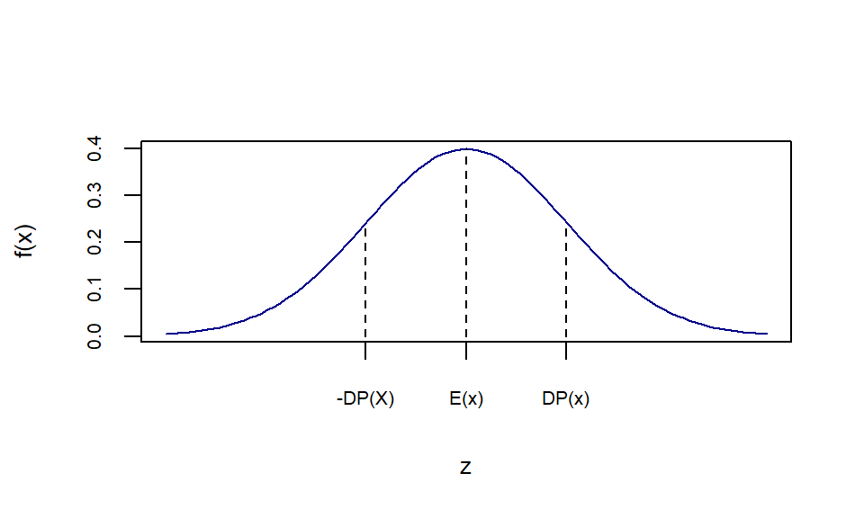
Alguns Modelos para Variáveis Aleatórias Contínuas
Modelos para Variáveis Aleatórias Contínuas
A Distribuição de Probabilidade Normal
O Modelo
Um dos principais modelos de probabilidade. É essencial para inferência estatística (distribuição Gaussiana).
Representação Gráfica:
Uma Distribuição Normal com parâmetros \(\mu\) e \(\sigma^{2}\) pode ser representada graficamente como:
Desvios e probabilidade no Modelo Normal
- Para entender melhor a distribuição Normal e a relação entre a média e o desvio padrão \(\sigma\) (- lembrando que \(\sigma=\sqrt{variância}\)) é interessante notar a proporção nos intervalos de desvio-padrão.
Desvios e probabilidade no Modelo Normal
- Ou seja, a fração da área abaixo da curva \(f(x)\) quando temos as seguintes amplitudes,tabela 1, da variável x na distribuição:
| Amplitude | Proporção |
|---|---|
| \(\mu\pm\sigma\) | \(68,3\%\) |
| \(\mu\pm2\sigma\) | \(95,5\%\) |
| \(\mu\pm3\sigma\) | \(99,7\%\) |
Representação gráfica
Considere 3 distribuições normais, \(X~N(10,9)\), \(Y~N(200,100)\) e \(Z~N(0,1)\).
Chance de estar entre \(\mu\) e \(\sigma\), ou seja, entre 10 e 13 para X, entre 200 e 210 para Y e entre 0 e 1 para Z, é de 34,15%.
Representação gráfica
- Isso vale para qualquer intervalo de desvio (-1,+1); (-1.3,+1.3); (-3,+3) !!!!

Os Momentos:
Os primeiros dois momentos da distribuição normal são:
Os Momentos:
Dessa forma para a distribuição normal as seguintes características são verdadeiras:
Se X é normalmente distribuída então \(X \sim N(\mu ,\sigma ^{2})\)
Como pode ser visto na figura 1, a densidade da distribuição é simétrica. Ou seja, para todo \(x\) real é verdade que:
\[\begin{array}{ccc} f(\mu + x; \mu, \sigma ^{2}) = f(\mu - x; \mu, \sigma ^{2}) \end{array}\]
Normal Padronizada
O Modelo Normal Padrão
Um caso especial da distribuição normal é aquela que possui média 0 e desvio padrão igual a 1. Recebe até um nome diferenciado, distribuição normal padrão.
Graficamente
A figura abaixo representa graficamente a Distribuição Normal Padrão:
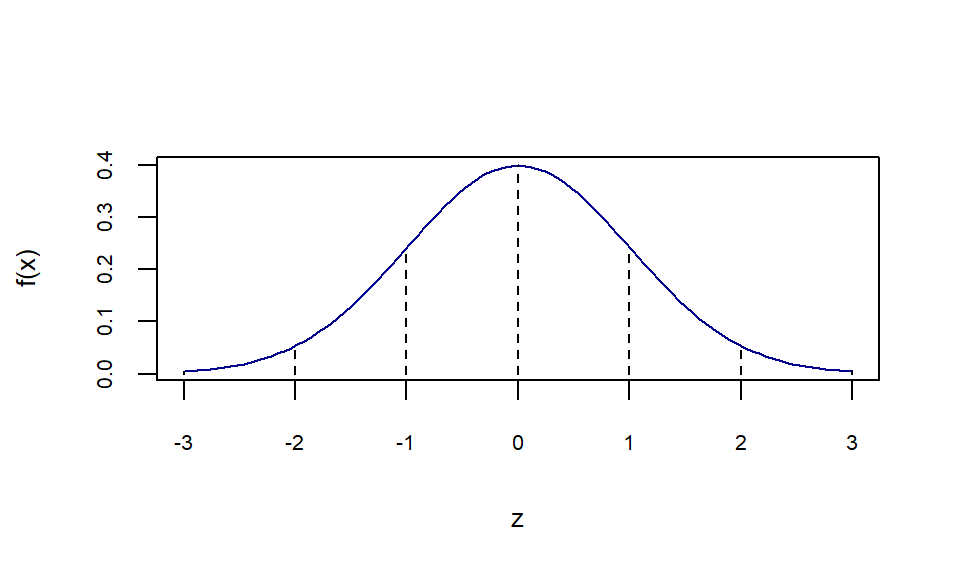
Padronização
Padronização
Padronização
Função Distribuição Acumulada
Função Distribuição Acumulada
A figura abaixo representa a área entre \(-\infty\) e \(y\) (figura à esquerda) de uma normal padrão com função de densidade \(\phi()\) . Já a figura à direita representa a densidade acumulada \(\Phi()\).
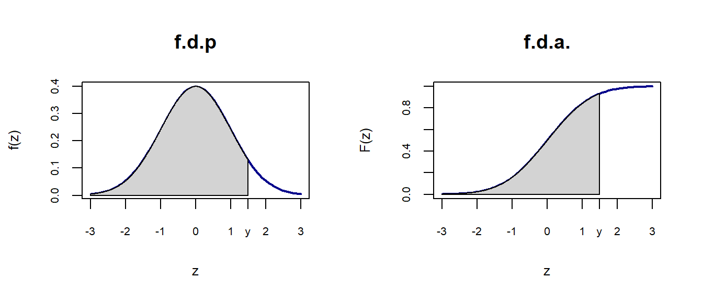
Calculando as probabilidades para a Distribuição Normal
- Suponha que \(X \sim N(\mu ,\sigma ^{2})\) e queremos calcular: \(P(a<X<b)=\int_{a}^{b}f(x) dx\). Sendo \(f(x)\) a f.d.p. da Dist. Normal.
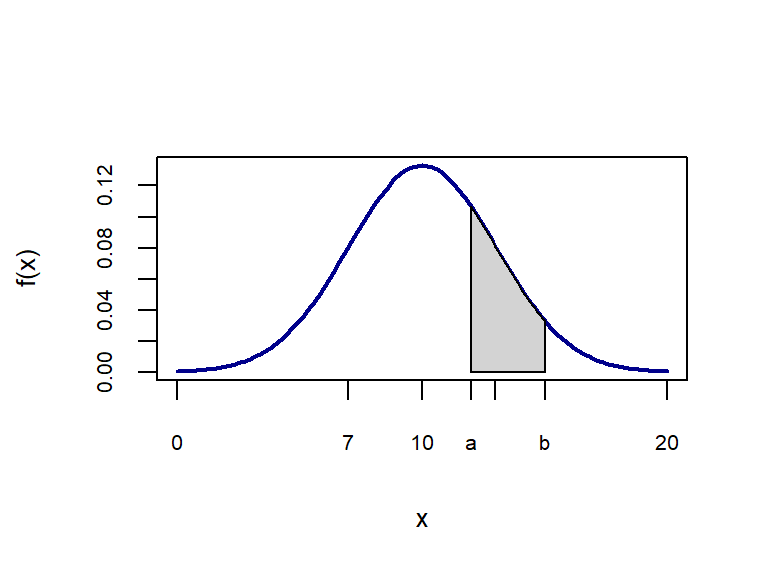
Calculando as probabilidades para a Distribuição Normal
É importante ressaltar que o cálculo da área só pode ser obtido por integração numérica. Para cada distribuição, com seu \(\mu\) e \(\sigma\) próprios, teríamos que calcular qual a \(P(a<X<b)\).
Então, para simplificar o problema, transformamos a distribuição em uma Normal Padrão, a qual temos as probabilidades calculadas e disponibilizadas na tabela da Normal Padrão.
Calculando as probabilidades para a Distribuição Normal
Ou seja, após a transformação em Normal padrão, passamos do cálculo da \(P(a<X<b)\) para a \(P(a*<Z<b*)\), onde \(Z \sim N(0 , 1)\)
Assim, podemos consultar o valor da \(P(a*<Z<b*)\) já calculado e reportado na tabela da Normal Padrão.
Calculando as probabilidades para a Distribuição Normal
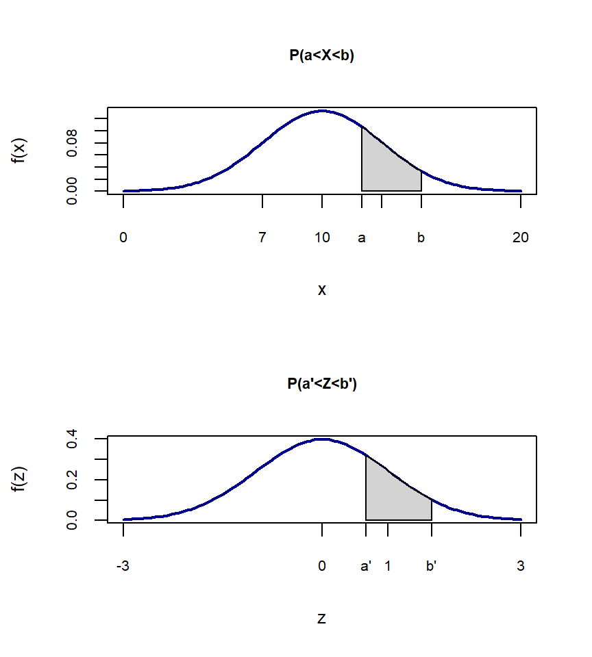
Um Exemplo
Tabela Normal

Mais um exemplo
Mais um exemplo
Mais um exemplo
- No R:
pnorm(10000,mean=10000,sd=1500)[1] 0.5pnorm(15000,mean=10000,sd=1500)-pnorm(12000,mean=10000,sd=1500)[1] 0.090782161-pnorm(20000,mean=10000,sd=1500)[1] 1.308398e-11Um terceiro exemplo
Um terceiro exemplo
A Densidade de Probabilidade Exponencial
O Modelo
Útil nas aplicações de contabilidade de sistemas.
Os Momentos
Graficamente
Considere a distribuição Exponencial para \(\beta=1\) e \(\beta=4\), ou seja, as esperanças.
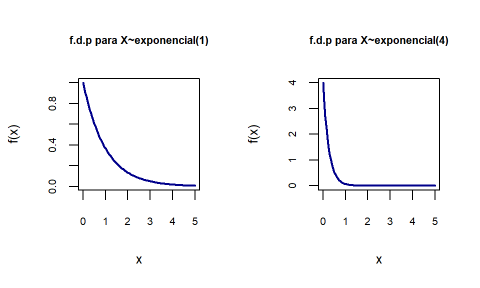
Função Distribuição Acumulada
Um Exemplo
Um Exemplo
- No R:
1-pexp(500,rate=1/500)[1] 0.3678794Aproximação da Normal pela Binomial
Relembrando a Dist Binomial
Relembrando a Dist Binomial
A tabela abaixo contém o cálculo da probabilidade do problema acima:
| Sucessos | Prob | p=1/2 |
|---|---|---|
| 0 | \(q^{3}\) | 1/8 |
| 1 | \(3pq^{2}\) | 3/8 |
| 2 | \(3p^{2}q\) | 3/8 |
| 3 | \(p^{3}\) | 1/8 |
Momentos:
Aproximação Normal à Binomial
Suponha uma variável Y distribuída pela binomial com parâmetros \(n=10\) e \(p=\frac{1}{2}\) . Suponha que queremos calcular \(P(Y \geq 7)\). Isso equivale a calcular:
| Sucessos | Prob | p=1/2 |
|---|---|---|
| 7 | \(\binom{10}{7}p^{7}q^{3}\) | 0,11718 |
| 8 | \(\binom{10}{8}p^{8}q^{2}\) | 0,04394 |
| 9 | \(\binom{10}{9}p^{9}q^{1}\) | 0,00977 |
| 10 | \(\binom{10}{10}p^{10}\) | 0,00098 |
Aproximação Normal à Binomial
- Note que :
Aproximação Normal à Binomial
- Aproximando, temos que:
Aproximação Graficamente
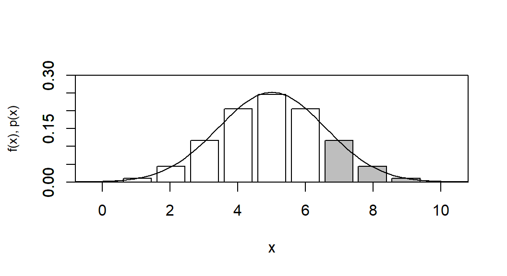
Exemplo
- Sendo X uma v.a. com distribuição normal então:
\[\begin{array}{ccc} P(Y \geq 7) \cong P(X \geq 6,5)= P(\frac{x-\mu}{\sigma}\geq \frac{6,5-\mu}{\sigma}) \\ \\ P(Z \geq \frac{6,5-\mu}{\sigma})= P(Z \geq 0,94) = 0,1714 \end{array}\]
onde \(Z \sim N(0,1)\)
Exemplo
A probabilidade encontrada pela Normal é de 0,172 enquanto pela aproximação encontramos que é de 0,1714.
Formalmente, justifica-se tal aproximação pelo Teorema do Limite Central.
Exemplo
- No R: \(P(Y \geq 7)\)
1-pbinom(6,size=10,prob=1/2)[1] 0.171875\(P(X \geq 6.5)\)
1-pnorm(6.5,mean=5,sd=sqrt(2.5))[1] 0.1713909Um outro exemplo
Um outro exemplo
Outras Distribuições importantes:
Distribuição Gamma
O Modelo Gamma
Graficamente
O gráfico abaixo mostra como a distribuição muda com a alteração dos parâmetros \(\alpha\) e para \(\beta=1\):
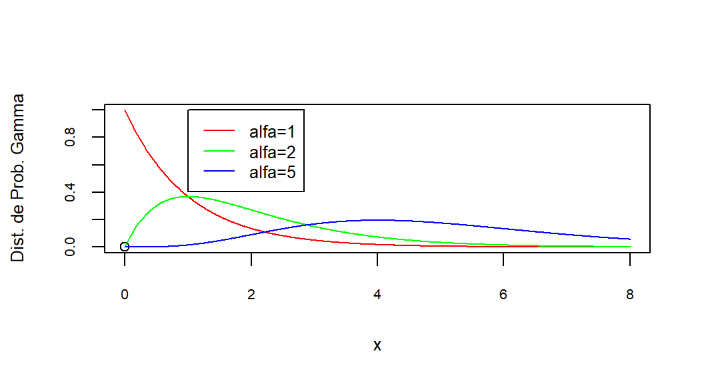
Momentos
Distribuição Qui-Quadrado
O Modelo
Graficamente
Abaixo temos a representação gráfica da Qui-Quadrado com diversos graus de liberdade (d.f.):
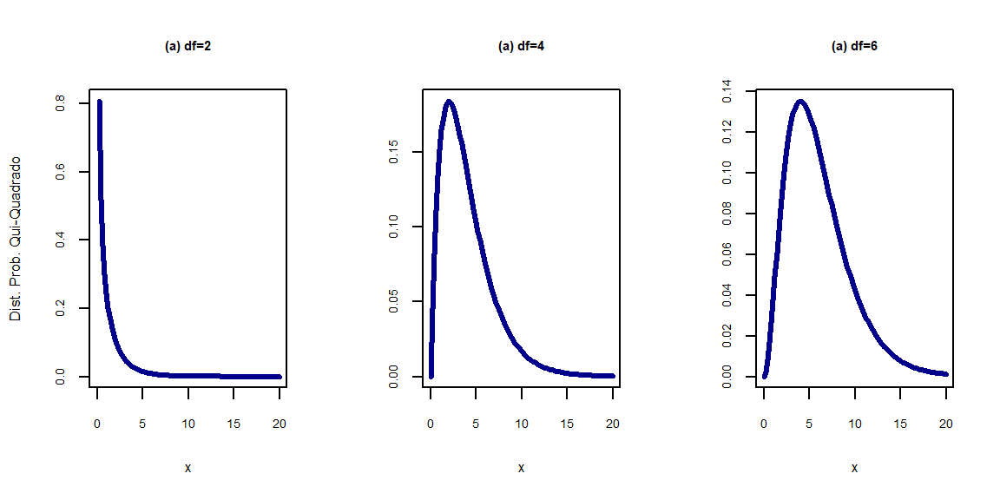
Momentos
Momentos
Existem tabelas para obter uma probabilidade \(P(Y>y_0)\) quando Y é uma variável com distribuição Qui-Quadrado.
Com \(v>30\) podemos utilizar a aproximação normal para a distribuição Qui-Quadrado.
Temos dois resultados importantes que serão definidos a seguir:
Resultados importantes
Distribuição t-student
O Modelo
Graficamente
Para \(v\) suficientemente grande, a densidade de \(t\) aproxima-se da \(N(0,1)\). Vejamos:
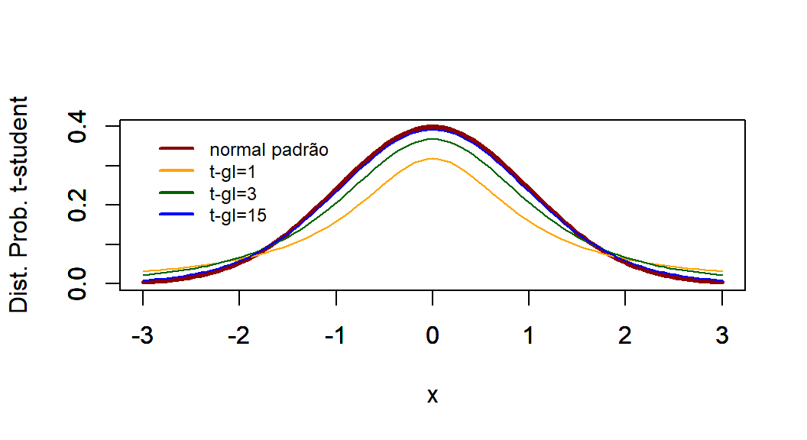
Observe que quanto maior o grau de liberdade, gl, mais próximo à normal padrão a distribuição de t-student se encontra.
Os Momentos
Distribuição F
O Modelo
Os Momentos
Graficamente
Gráficos da distribuição para diferentes combinações de \(v_1\) e \(v_2\).
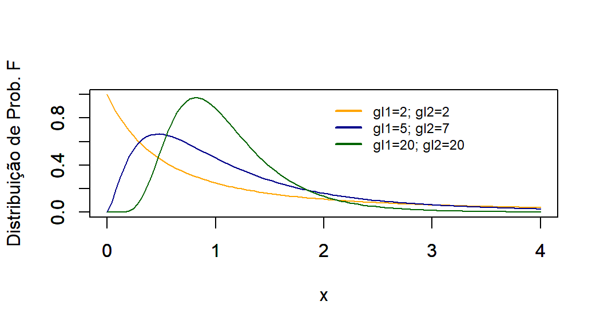
Um Exemplo
Tabela da Distribuição F